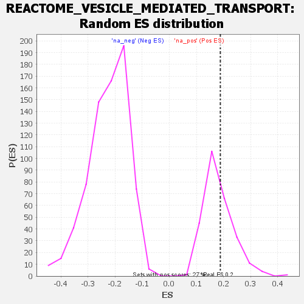

| | | Dataset | genes_ranked_stat_0.1 |
| Phenotype | NoPhenotypeAvailable |
| Upregulated in class | na_pos |
| GeneSet | REACTOME_VESICLE_MEDIATED_TRANSPORT |
| Enrichment Score (ES) | 0.18831709 |
| Normalized Enrichment Score (NES) | 1.0376607 |
| Nominal p-value | 0.39700374 |
| FDR q-value | 0.49147075 |
| FWER p-Value | 0.919 |
Table: GSEA Results Summary
 Fig 1: Enrichment plot: REACTOME_VESICLE_MEDIATED_TRANSPORT
Fig 1: Enrichment plot: REACTOME_VESICLE_MEDIATED_TRANSPORT
Profile of the Running ES Score & Positions of GeneSet Members on the Rank Ordered List

Fig 2: REACTOME_VESICLE_MEDIATED_TRANSPORT: Random ES distribution
Gene set null distribution of ES for REACTOME_VESICLE_MEDIATED_TRANSPORT